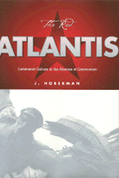

<body bgcolor="#FFFFFF" text="#000000" link="#0000FF" vlink="#CC0000" alink="#CC0000"><center><hr width="350" size="1" align="center" noshade>A delightful and witty examination of Communism as an art form<hr width="350" size="1" align="center" noshade><p><a href="https://cdcshoppingcart.uchicago.edu/Cart/ChicagoBook.aspx?ISBN=9781566396431&&PRESS=temple" target="_top">Buy this book!</a> | <a href="https://cdcshoppingcart.uchicago.edu/Cart/Cart.aspx?PRESS=temple" target="_top">View Cart</a> | <a href="https://cdcshoppingcart.uchicago.edu/Cart/Cart.aspx?PRESS=temple" target="_top">Check Out</a></p><p></p></center><!--none//--><h1>The Red Atlantis</h1>
<H2>Communist Culture in the Absence of Communism</H2>
<h3>J. Hoberman</h3>
<P>cloth 1-56639-643-3 $84.50, Nov 98, <FONT COLOR=#990033>Out of Stock Unavailable</FONT>
<br>paper 1-56639-767-7 $31.95, Mar 00, <FONT COLOR=#990033>Available</FONT>
<BR> 326 pp
5x9
</P><h3 align="center"><P><font color="#996633">Philadelphia Book Clinic Certificate of Award,
1999</font></P>
<P><font color="#996633">Association of American University Presses Book Jacket Award,
1999</font></P>
<P><font color="#996633">Outstanding Academic Title, <i>Choice</i>,
1999</font></P>
</H3>
<BLOCKQUOTE><I>"These essays, at once funny and heartbreaking, survey the work of Soviet and Eastern European artists, writers, and filmmakers. Hoberman is an expert gifted with high intellectual spirits, but he doesn't take cheap shots: he never lets us forget the pressures and dangers that affected even the most devoted Communists under Communism."</I>
<BR>&#151<B><I>New Yorker</I></B><I></I></BLOCKQUOTE>
<P>For most of the twentieth century, American and European intellectual life was defined by its fascination with a particular utopian vision. Both the artistic and political vanguards were spellbound by the Communist promise of a new human era&#151so much so that its political terrors were rationalized as a form of applied evolution and its collapse hailed as the end of history.
<P><I>The Red Atlantis</I> argues that Communism produced a complex culture with a dialectical relation to both modernism and itself. Offering examples ranging from the Stalinist show trial to Franz Kafka's posthumous career as a dissident writer and the work of filmmakers, painters, and writers, which can be understood only as criticism of existing socialism made from within, <I>The Red Atlantis</I> suggests that Communism was an aesthetic project&#151perhaps <I>the</I> aesthetic project of the twentieth century.
<BR>&nbsp;<h2>Excerpt</h2><P>Excerpt available at <a href="http://www.temple.edu/tempress">www.temple.edu/tempress</a></p>
<BR>&nbsp;<h2>Reviews</h2>
<P><I>"Zooming back and forth from Berlin to Moscow to the Lower East Side, J. Hoberman has compiled the best evocation of the lost world of Jewish communism since the historian Raphael Samuel's memoir of working-class East London in </I>New Left Review<I>."</I>
<BR>&#151<B><I>The Lingua Franca Book Review</I></B>
<P><I>"In J. Hoberman, the ruins of communist culture have found a passionate and erudite archeologist. A collection of essays on communist art, film, and literature, </I>The Red Atlantis<I> is an elegy for the 'Communist utopia which, in fact, never existed.'"</I>
<BR>&#151<B><I>Dissent</I></B>
<P><I>"This is a superb collection of essays&#151deft, penetrating, erudite, witty and altogether a pleasure to read."</I>
<BR>&#151<B><I><a href="../reviews/1283_review.html">Washington Post</a></I></B>
<P><I>"Provocative, insightful, funny, J. Hoberman's </I>The Red Atlantis<I> explains how&#151with Philistines generally in charge&#151Communism, in contrast always to anti-Communism, managed to encourage some of the most interesting, most Jewish, and silliest art of the century."</I>
<BR>&#151<B>Paul Buhle</B>, co-author of <I>Tender Comrades: A Backstory of the Hollywood Blacklist</I>
<p><i>"Intelligently stitched together from Hoberman's many reviews, this volume introduces readers to the lost continent of communist culture....Well documented and written with enviable verve, this provocative book should reopen old debates and spark useful reevaluations of the countless compromised masterpieces produced by well-meaning but ultimately misguided intellectuals over more than 70 turbulent years."</i>
<br>&#151<b><i>Choice</i></b>
<p><i>"...an easy book to read, but a hard one to review.... The articles were written at different times and have been thoroughly revised for publication. They all deal with Hoberman's major interests: cinema, Jews, and communism. Perhaps not surprisingly, he manages quite often to bring these three interests together."</i>
<br>&#151<b><i>Slavic Review</i></b>
<BR>&nbsp;<h2>Contents</h2><P>
<p>Acknowledgments
<br>Introduction: Missing...The Berlin Wall
<br>1. "I Saw Stalin Once When I Was a Child": Socialist Realism, the Last Ism
<br>2. Realist Socialism: Documenting the Undocumentable
<br>3. Beyond the Pale: Soviet Jews and Soviet Jewish Cinema
<br>4. Who Was Victor Serge (and Why Will We Have to Ask)?
<br>5. Life in Czechoslovakia, or a Cage in Search of a Bird
<br>6. A History of Communism in Twenty-four Scenarios
<br>7. My Nuclear Family
<br>Notes
<br>Index
</P><BR>&nbsp;<H2>About the Author(s)</H2>
<table><tr><td valign="top"><img src="/tempress/authors/1283_au.gif" height="90" width="75"></td><td width="100%" valign="middle"><p><B>J. Hoberman</B>, staff writer for the <I>Village Voice</I>, writes on film and culture for the <I>Voice</I>, the <I>Voice Literary Supplement</I>, <I>Artforum</I>, and other publications. His books include <I><a href="1266_reg.html" target="_top">Bridge of Light: Yiddish Film Between Two Worlds</a></I> (Temple, 1995) and <I><a href="840_reg.html" target="_top">Vulgar Modernism: Writing on Movies and Other Media</a></I> (Temple, 1991), which was nominated for the National Book Critics Circle award in criticism. He is an Adjunct Professor of Cinema at the Cooper Union.</P></td></tr></table>
<BR><H2>Subject Categories</H2>
<p><A HREF="/tempress/general.html" TARGET="_top">General Interest</a>
<BR><A HREF="/tempress/cinema.html" TARGET="_top">Cinema Studies</a>
</p>
<BR><h2 class="inpageheading">In the series</H2>
<P><I><a href="http://www.temple.edu/tempress/culture.html" onMouseOver="window.status='Click for other books in this series!'; return true;" onMouseOut="window.status=''; return true;" target="_top">Culture and the Moving Image</a></i>, edited by Robert Sklar.
</p><p>The <I>Culture and the Moving Image</I> series, edited by Robert Sklar, seeks to publish innovative scholarship and criticism on cinema, television, and the culture of the moving image. The series will emphasize works that view these media in their broad cultural and social frameworks. Its themes will include a global perspective on the world-wide production of images; the links between film, television, and video art; a concern with issues of race, class, and gender; and an engagement with the growing convergence of history and theory in moving image studies.</p>
<p align="center"><a href="https://cdcshoppingcart.uchicago.edu/Cart/ChicagoBook.aspx?ISBN=9781566396431&&PRESS=temple" target="_top">Buy this book!</a> | <a href="https://cdcshoppingcart.uchicago.edu/Cart/Cart.aspx?PRESS=temple" target="_top">View Cart</a> | <a href="https://cdcshoppingcart.uchicago.edu/Cart/Cart.aspx?PRESS=temple" target="_top">Check Out</a></p><p><font face="Arial" size="1"><a href="copyright.html" onMouseOver="window.status='Web Copyright Policy';return true;" onMouseOut="window.status=''" title="Web Copyright Policy">&copy;</a> 2015 <a href="http://www.temple.edu" target="new" onMouseOver="window.status='Link to Temple University home page';return true;" onMouseOut="window.status=''" title="Link to Temple University home page">Temple University</a>. All Rights Reserved. http://www.temple.edu/tempress/titles/1283_reg.html</font></p>